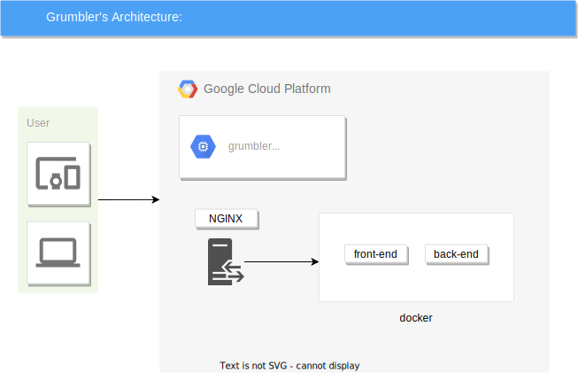
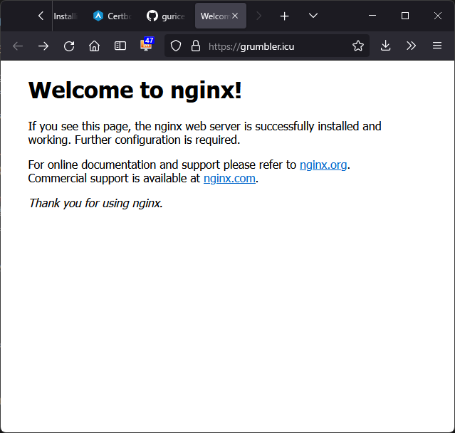
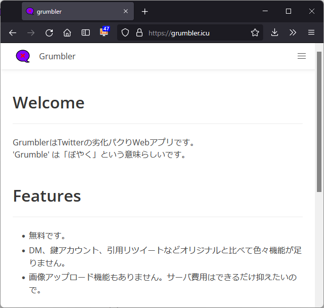

Go + Mint + GCPでTwitterクローンを開発した
以前 @chokudai 氏が以下のことをつぶやいていた。
「未経験ですがWebエンジニアになりたいです！」って言ってる人には、「とりあえずAWS上で動くミニTwitterみたいなの作るといいよ！」って伝えてる。一人でミニTwitter作れる人、Webで必要な知識一通り揃ってるのかな、と一応言えるかなあと思っていて、個人的に安心感があるのよね。
— chokudai(高橋 直大)🍆@AtCoder社長 (@chokudai) July 29, 2021
前職では主にWindowsデスクトップアプリを開発していたが、Web系企業に就職したいと思い挑戦してみた、
ここでいきなり宣伝しますが、プログラミングやゲームをしてたらいつの間にかニート期間が1年を超えたので、そろそろ就業したいと考えています。
- 志望職種 : バックエンドエンジニア
- 希望する雇用条件 : 週5・8時間のフルタイム、フルリモート
- 勤務先が大阪府またはその近隣府県の場合、月に2, 3回程度の出社なら可能です。
- LAPRAS : https://lapras.com/public/GETXUA0
現在の私のスキルセットでは無理があるでしょうが、将来的にはシステムに横断的に関われそうなSREにも挑戦したいと思っています。
私という人材に興味を抱いた方がいらっしゃれば、Twitterなどでお気軽にご連絡いただければと思います。どうぞよろしくお願いいたします。m(´･_･`)m
以下、本題。
開発したWebアプリの概要
名前は「Grumbler」。
- 公開サイト : https://grumbler.icu/
- リポジトリ : https://github.com/guricerin/grumbler
全体構成図

drawioで作った。本当はDockerアイコンを載せたいけど、ファイル保存するとなぜか消失する。
バックエンド
言語はGo。フレームワークは無難にGin。これらの選定理由は最近のWeb系企業でよく使用されているらしいから。
ツイート、リツイート、リプライ、ブックマーク、フォロー、検索など一通りの機能は実装している。引用リプライやDM、ブロック、ミュート、画像アップロード機能はない。
遅延読み込み？などは一切やってないので、仮にツイートが10万件とかになるとタイムライン表示がめっちゃ遅くなりそう。
JSONを受け取ってJSONを返せばええんやろ、というものすごい雑なイメージで構築した。
セキュリティについては徳丸本を読み返しながら気をつけたつもりだけど、漏れがありそうでビビってる。
Dockerの書き方については参考リンクにあたった。「alpineは避けたほうがいい」だの「マルチステージビルド」だの知らないことだらけだった。
マルチステージビルドについては公式ドキュメントよりもサイボウズが公開している講義資料のほうがわかりやすい。
参考リンク
フロントエンド
言語はMint。SPA用のJavaScriptを吐く。ググるときは「mintlang」で検索したほうがいい。
Crystal製の静的型付け言語。代数的データ型あり、F#でおなじみのパイプラインあり、Elmでは死ぬほど面倒だったルーティングが言語機能として組み込まれていたりとよりどりみどり。
フロントエンドにはあまり興味がない、というよりはおれのデザインセンスが壊滅的 & 動的型付け言語が苦手。コンパイラに怒鳴られながらじゃないとコード書けない。
フロントエンドエンジニアになるつもりもないので、言語はおもしろそうでドマイナーなものを選んで好き勝手した。
手触りとしては、Elmよりはゆるく書け、JavaScriptほどはちゃめちゃではない感じ。HTML生成部分はほぼJSX記法。
具体的なコードの書き方やお作法なんかは公式ガイドとMint版RealWorldからパクれば大体なんとかなる（参考にできるようなプロジェクトがこれらくらいしかないともいう）。
CSSフレームワークはBulmaを採用した。公式ドキュメントとBulma Fluentをパクるだけでいい感じの見た目になるので、デザイン弱者には大変ありがたい。特に後者。
ちなみに以前、Tailwindにも手を出してみたことがあったが、CSSなんもわかってなかったら修羅の道だった。
データベース
MySQLを選定。とくに深い理由はない。
PostgreSQLなどとの違いもよくわかっていない。SQLの書き方が微妙に違うなあという程度のレベル。
インフラ
GCP
AWSは以前使用したことがあるものの、チュートリアルしかしないうちに無料期間が終了したため、今回はGCPにデプロイすることにした。
Azureについてだが、軽く調べた限りではAWSやGCPに比べて無料期間が短いっぽいので採用を見送った。
デプロイとはいえ、開発時に用いていたDockerファイルをほぼそのまま流用して、GCE上でコンテナを動かしている。本番環境にDockerを使うのはサーバ初心者の勉強としてはどうなんだとは思いつつ楽なやり方に頼った。ちなみにKubernetesはよく知らない。
GCEの構築は参考リンクに従ってビクつきながら行った。無料枠のマシンタイプがf1-microからe2-microに変更されている点に注意。
参考リンク
- https://scrapbox.io/neet/GCP%E3%81%A7%E7%84%A1%E6%96%99%E3%81%A7%E3%82%B5%E3%83%BC%E3%83%90%E3%83%BC%E3%82%92%E3%81%A4%E3%81%8F%E3%82%8D%E3%81%86%E5%9B%9E
- https://qiita.com/Brutus/items/22dfd31a681b67837a74
SSL対応
WebサーバをSSL化するにはドメインが必須なんて初めて知ったよ、はっはっは。
厳密にはドメインがなくても通信自体は暗号化できるが、サーバの身元が正当なCAによって保証されなくなるという感じらしい。
というわけで人生で初めてドメインを取得した。レジストラの候補はちょいと調べて3つ出てきたが、結局Google様に頼ることにした。
- お名前.com : 格安だが、ここ数年のネット上での悪評が凄まじいのでやめといた。
- Freenom : 無料。詐欺サイトとのこと。
- Google Domains : 最安で1540円/年（税込み）。貧乏人にはこれでも少しきついが、まあええか。
ドメインとIPアドレス対応付け手順は以下のような感じ。だいぶ適当だけど。
Google Domainsでドメインを購入。- 左メニューの
DNS->カスタムレコード。 Aレコード作る。購入したドメインと、GCEに割り当てた静的外部IPアドレスを紐付け。
CAには証明書を無料で発行してくれるLet’s Encryptを選んだ。
んで、実際に発行するためには、Let’s Encryptが推奨するCertbotというツールをサーバに導入する。
やり方はここを参照。このページではDebian 10を想定しているが、GCEのOSにはうっかりDebian 11を選んでしまっていた。まあたいした違いはないだろう。たぶん。
まずsnapdをインストール。こちらを参照。
sudo apt install snapd
Certbotをインストールし、certbotコマンドを使用可能にする。ちなみに、GCEには古いCertbotは入っていなかった。
sudo snap install --classic certbot
sudo ln -s /snap/bin/certbot /usr/bin/certbot
Certbotを実行。いくつか質問に答えたら自動でWebサーバをSSL対応してくれた。/etc/nginx/sites-available/defaultを編集してくれたっぽい。
sudo certbot --nginx

あとはgit cloneでコードをもってきて、dockerで立ち上げて、https://grumbler.icuに接続されたらnginxのリバースプロキシ機能でGCE上のlocalhostに振り分けるようにする。
/etc/nginx/sites-available/defaultを以下のように編集。+は追加行、-は削除行。
nginxのproxy_passの書き方でつまづいた部分があったが、このページを見て解決。
server {
root /var/www/html;
index index.html index.htm index.nginx-debian.html;
server_name grumbler.icu # managed by Certbot
+ proxy_set_header Host $host;
+ proxy_set_header X-Real-IP $remote_addr;
+ proxy_set_header X-Forwarded-Host $host;
+ proxy_set_header X-Forwarded-Server $host;
+ proxy_set_header X-Forwarded-For $proxy_add_x_forwarded_for;
+ proxy_set_header X-Forwarded-Proto $scheme;
+ proxy_hide_header `Access-Control-Allow-Origin`;
+ location /api/ {
+ proxy_pass http://localhost:8080;
+ }
+ location / {
- try_files $uri $uri/ =404;
+ proxy_pass http://localhost:3000;
+ }
# 以下省略
}
最後に自前の環境設定ファイルをちょいと弄って完成。
いけてんね。通信が思ったより遅いけど。

反省点
テストコード全然書けてない。由々しき問題である。やり方を説明してくれる本でも買うか。『テスト駆動開発』が定番なのだろうか？